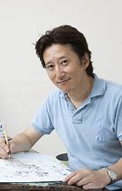

|
|
我的偶像
|
|
周杰伦
周杰伦（Jay Chou），1979年1月18日出生于台湾省新北市，中国台湾流行乐男歌手、音乐人、演员、导演、编剧、监制、商人。
2000年发行首张个人专辑《Jay》。2001年发行的专辑《范特西》奠定其融合中西方音乐的风格。2002年举行“The
One”世界巡回演唱会。2003年成为美国《时代周刊》封面人物。2004年获得世界音乐大奖中国区最畅销艺人奖。2005年凭借动作片《头文字D》获得台湾电影金马奖、香港电影金像奖最佳新人奖。2006年起连续三年获得世界音乐大奖中国区最畅销艺人奖。2007年自编自导的文艺片《不能说的秘密》获得台湾电影金马奖年度台湾杰出电影奖。
2008年凭借歌曲《青花瓷》获得第19届金曲奖最佳作曲人奖。2009年入选美国CNN评出的“25位亚洲最具影响力的人物”；同年凭借专辑《魔杰座》获得第20届金曲奖最佳国语男歌手奖。2010年入选美国《Fast
Company》评出的“全球百大创意人物”
。2011年凭借专辑《跨时代》再度获得金曲奖最佳国语男歌手奖，并且第4次获得金曲奖最佳国语专辑奖；同年主演好莱坞电影《青蜂侠》。2012年登福布斯中国名人榜榜首。2014年发行华语乐坛首张数字音乐专辑《哎呦，不错哦》。2018年举行“地表最强2世界巡回演唱会”。
演艺事业外，他还涉足商业、设计等领域。2007年成立杰威尔有限公司。2011年担任华硕笔电设计师并入股香港文化传信集团。
周杰伦热心公益慈善，多次向中国内地灾区捐款捐物。2008年捐款援建希望小学。2014年担任中国禁毒宣传形象大使。
|
|
|
约翰·冯·诺依曼
约翰·冯·诺依曼（John von Neumann，1903年12月28日-1957年2月8日），美籍匈牙利数学家、计算机科学家、物理学家，是20世纪最重要的数学家之一。
冯·诺依曼是罗兰大学数学博士，是现代计算机、博弈论、核武器和生化武器等领域内的科学全才之一，被后人称为“现代计算机之父”、“博弈论之父”。
冯·诺依曼先后执教于柏林大学和汉堡大学，1930年前往美国，后入美国籍。 历任普林斯顿大学教授、普林斯顿高等研究院教授，入选美国原子能委员会会员、美国国家科学院院士。
早期以算子理论、共振论、量子理论、集合论等方面的研究闻名，开创了冯·诺依曼代数。 冯·诺依曼第二次世界大战期间曾参与曼哈顿计划，为第一颗原子弹的研制作出了贡献。
冯·诺依曼1944年与奥斯卡·摩根斯特恩合著《博弈论与经济行为》，是博弈论学科的奠基性著作。
晚年，冯·诺依曼转向研究自动机理论，著有对人脑和计算机系统进行精确分析的著作《计算机与人脑》（1958年），为研制电子数字计算机提供了基础性的方案。
其余主要著作有《量子力学的数学基础》（1926年）、《经典力学的算子方法》、《连续几何》（1960）等。
|
|
|
荒木飞吕彦
荒木飞吕彦（日语：あらき ひろひこ 英语：Hirohiko Araki），本名荒木利之，1960年6月7日出生于日本宫城县仙台市，日本漫画家。代表作品有《巴欧来访者》、《JOJO的奇妙冒险》、《STEEL
BALL RUN》、《JOJOLion》、《JOJOLands》等。其作品的魅力不仅体现在有力的笔触和画风上， 还表现在登场角色的动作与服饰上。
1987年《JOJO的奇妙冒险》开始在日本漫画周刊少年Jump连载之初，只不过被视为一部格斗类型的漫画，没想到创作者荒木飞吕彦为角色加入了“替身”的超能力之后，在漫画的幻想世界里，自成一派，广受讨论。
到底什么是“替身”？根据荒木飞吕彦个人的解释，他想像中的替身，是一种潜在意识、或者类似灵魂之类的东西，根本非肉眼可见。角色与角色之间的格斗，真正比的是智慧、心理战。他所画的“替身”，其实是将这些抽象的个人特质具象化，有些人擅长思考、有些人行动力迅速积极…等，变成一个个有造型的实体。“替身”的原名是Stand，Stand是荒木飞吕彦自行设定并赋予意义的，在字典上并无法找关於超能力的解释，他认为这字眼有着站在身旁的意味，替身应该像是影子或是幽灵，是人的一部分。
荒木飞吕彦作品
荒木飞吕彦作品(16张)
作者成长于日本开始与流行文化紧密结合的时代。1960年出生的荒木飞吕彦，少年时代最爱的事就是电影、漫画与摇滚乐。以电影来说，最有兴趣的是克林特·伊斯特伍德的西部电影，即使看电视，也偏爱日本剑侠的时代剧；漫画方面喜欢土白叁平的忍者系列，音乐则喜欢齐柏林飞船、巴布·狄伦、YES等西洋摇滚乐团。荒木飞吕彦会将他所喜欢、或是感兴趣的元素放进自己的创作中，譬如JOJO起初替身的名号，取名来自于塔罗牌与埃及九神，「愚者」、「死神」、「教皇」…，后续作品则由流行音乐的团体或是艺人名称所取代，像是「皇后」Queen、「海滩男孩」BeachBoys、最近还有「辣妹」登场…而角色的穿着装束，大部分是参考凡赛斯Versace与莫史基诺Moschino，造型杂揉庸俗与华丽。荒木飞吕彦将流行文化的讯息重新组合，分置在《JOJO》之中，其实都是他个人幻想与经验的延伸。
荒木曾经创造出一个地点「杜王町」，为角色斗智斗勇的地点。他对镇上建物分布与居民活动空间，都有细腻的观察与描写。事实上，杜王町的蓝图就是荒木的故乡，日本仙台的小镇。虽然荒木画的是具有幻想情节的漫画，可是漫画中的场景与景地都非常写实。《JOJO》第一部以英国作为故事背景，第二部是南欧，第三部是埃及，第四部是日本，第五部是意大利，第六部是美国，第七部是北美大陆（可与之前的系列作品看做平行宇宙的关系），第八部则回到日本。每过一个章节，荒木便会标示所有故事发生的地点示意图，这种表现概念是玩电动游戏世代的集体经验－－过关斩将必得对周遭景物有所了解。在游戏中所设计千奇百怪的场景，既藏有解谜的暗示也是危险的来源，电玩世代对于景地非常敏感，都有着丰富的想像力。
虽然《JOJO》已经有35年的历史了，荒木却是非常“年轻”的漫画家，他从专校毕业后，便投身漫画创作，处女作是《武装扑克》（以西部小镇械斗为背景），之后除了发表《魔少年》、《巴欧的来访者》、《曼妙的爱林》等短篇之外，全部精神都花在《JOJO》这部长篇巨作。未来如何发展不得而知，但是《JOJO》跳脱现前超人幻想漫画类型的窠臼则是毋庸置疑的。
|  |
|
| |